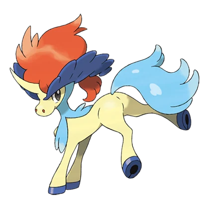

Recover all 25 encounters in the original 10-page fieldbook: Xerneas, Yveltal and Zygarde, the two Mystery Gift missions, Mega Dimension and the seven Special Scan possibilities. Each route tells you what the owner’s PDF actually records.
Obtained checkboxes use the same saved progress as the main GitHub guide on this browser/device. They do not sync to the original Workspace website or other devices.
FOLLOW A PRACTICAL ORDER
Which Legendary should I tackle next?
This route order follows the prerequisites actually written in the PDF, rather than guessing missing steps or placing random Special Scan species at fixed map points.
01
Finish the main story
After the credits, follow Mable and Vinnie for Xerneas and Yveltal; both are needed before Zygarde.
The Diancie and Mewtwo quests need the specified in-game gifts. The PDF does not establish current availability. Confirm the required gift is on your save before travelling.
Expansion requirements
The 13 Mega Dimension routes depend on the DLC. Many have named story gates, donuts, quests or currency requirements: follow those before trying to visit the target location.
Special Scans are not fixed pins
The seven Special Scan entries share an Unknown Zone method. The PDF’s sixth-scan guarantee refers to a group-level legendary encounter, not a promise of a chosen Pokémon on a particular scan.
Follow-up details to check later
Where the original capture omits a rooftop entrance, a final capture interaction or a precise post-wall route, the card marks that gap for the next player-verified walkthrough.
25 ORIGINAL ILLUSTRATED ROUTES
Every Legendary & Mythical field card
Pick your target below. You can search by Pokémon, district, item or mission, then expand the original steps. Tick Obtained after you actually receive the Pokémon; the checkmark is shared with the existing guide on this device.
Showing 25 of 25 encounters
No legendary route matches those filters. Clear the search or try another category.
NATIONAL #716
Base story
Xerneas
⌖ Wild Zone 11
After the credits, speak to Mable. Clear the anomalous Alphas in Wild Zones 3, 5 and 9, then enter Wild Zone 11 for the Xerneas encounter.
Route detailMission 40 · Level 75.
Read 3 practical steps for Xerneas
Finish the main story and speak with Mable after the credits.
Clear the anomalous Alpha encounters in Wild Zones 3, 5 and 9.
Enter Wild Zone 11 to begin Xerneas’s encounter.
These numbered checkpoints unpack the original PDF record; they are not separately verified discoveries.
Owner’s original Legends PDF · printed page 3 of 10
NATIONAL #383
Mega Dimension
Groudon
⌖ Jaune Sector 11 → Desolate Land
After Darkrai, research the ruby distortion, obtain Hoennian Salt, make the Omega Donut and enter the Jaune Sector 11 portal. Beat Groudon and Primal Groudon.
Route detailLevel 80 · Water attacks fail against Primal Groudon.
Read 4 practical steps for Groudon
After Darkrai, investigate the ruby distortion and obtain Hoennian Salt.
Make the Omega Donut.
Enter the portal in Jaune Sector 11 to reach Desolate Land.
Defeat Groudon and Primal Groudon. The PDF warns that Water attacks fail against the Primal form.
These numbered checkpoints unpack the original PDF record; they are not separately verified discoveries.
Owner’s original Legends PDF · printed page 6 of 10
NATIONAL #802
Mega Dimension
Marshadow
⌖ Rouge Sector 1 training court
Follow the North Boulevard ghost-child request. Wait until Prism Tower’s shadow crosses the Poké Ball symbol on the training court, then inspect the ground.
Route detailLevel 80 · A time-of-day and shadow puzzle.
Read 4 practical steps for Marshadow
Follow the North Boulevard ghost-child request.
Visit the training court in Rouge Sector 1.
Wait until Prism Tower’s shadow crosses the Poké Ball symbol on the court.
Inspect the ground when the shadow aligns.
These numbered checkpoints unpack the original PDF record; they are not separately verified discoveries.
Fresh-playthrough check: The PDF documents the shadow puzzle, but not a detailed follow-on capture sequence.
Owner’s original Legends PDF · printed page 7 of 10
NATIONAL #807
Mega Dimension
Zeraora
⌖ Station distortion
After Rayquaza and the other gift missions, trade for Popping Candy on a Vert Sector 3 rooftop. Ask Ansha for the Plasma Donut, then follow Emma to the station portal.
Route detailLevel 85 · Dodge the sweeping Electroweb patterns.
Read 4 practical steps for Zeraora
After Rayquaza and the other gift missions, find the Popping Candy trade on a Vert Sector 3 rooftop.
Ask Ansha to make the Plasma Donut.
Follow Emma to the station distortion.
Dodge the sweeping Electroweb attack patterns in the encounter.
These numbered checkpoints unpack the original PDF record; they are not separately verified discoveries.
Fresh-playthrough check: The original PDF does not include a confirmed exact ladder or rooftop entrance for the Popping Candy trade.
Owner’s original Legends PDF · printed page 7 of 10
NATIONAL #380
Special Scan
Latias
⌖ Unknown Hyperspace Zone
After Rayquaza, collect 25,000 Hyperspace research points and ask Philippe for a Special Scan. Explore the resulting Unknown Zone for a rare encounter.
Route detailA legendary encounter is guaranteed by the sixth scan without one until this group is caught.
Read 4 practical steps for Latias
Finish the Rayquaza route in Mega Dimension.
Collect 25,000 Hyperspace research points and request a Special Scan from Philippe.
Explore the Unknown Hyperspace Zone generated by that scan.
Check the legendary encounter; the PDF states a group-level encounter guarantee by the sixth unsuccessful scan, not a fixed species or city location.
These numbered checkpoints unpack the original PDF record; they are not separately verified discoveries.
Fresh-playthrough check: These are random Special Scan Unknown Zone encounters, not guaranteed fixed city-map placements. The exact sixth-scan safeguard should be confirmed during a fresh playthrough.
Owner’s original Legends PDF · printed page 7 of 10
NATIONAL #381
Special Scan
Latios
⌖ Unknown Hyperspace Zone
After Rayquaza, collect 25,000 Hyperspace research points and ask Philippe for a Special Scan. Explore the resulting Unknown Zone for a rare encounter.
Route detailA legendary encounter is guaranteed by the sixth scan without one until this group is caught.
Read 4 practical steps for Latios
Finish the Rayquaza route in Mega Dimension.
Collect 25,000 Hyperspace research points and request a Special Scan from Philippe.
Explore the Unknown Hyperspace Zone generated by that scan.
Check the legendary encounter; the PDF states a group-level encounter guarantee by the sixth unsuccessful scan, not a fixed species or city location.
These numbered checkpoints unpack the original PDF record; they are not separately verified discoveries.
Fresh-playthrough check: These are random Special Scan Unknown Zone encounters, not guaranteed fixed city-map placements. The exact sixth-scan safeguard should be confirmed during a fresh playthrough.
Owner’s original Legends PDF · printed page 8 of 10
NATIONAL #638
Special Scan
Cobalion
⌖ Unknown Hyperspace Zone
After Rayquaza, collect 25,000 Hyperspace research points and ask Philippe for a Special Scan. Explore the resulting Unknown Zone for a rare encounter.
Route detailA legendary encounter is guaranteed by the sixth scan without one until this group is caught.
Read 4 practical steps for Cobalion
Finish the Rayquaza route in Mega Dimension.
Collect 25,000 Hyperspace research points and request a Special Scan from Philippe.
Explore the Unknown Hyperspace Zone generated by that scan.
Check the legendary encounter; the PDF states a group-level encounter guarantee by the sixth unsuccessful scan, not a fixed species or city location.
These numbered checkpoints unpack the original PDF record; they are not separately verified discoveries.
Fresh-playthrough check: These are random Special Scan Unknown Zone encounters, not guaranteed fixed city-map placements. The exact sixth-scan safeguard should be confirmed during a fresh playthrough.
Owner’s original Legends PDF · printed page 8 of 10
NATIONAL #639
Special Scan
Terrakion
⌖ Unknown Hyperspace Zone
After Rayquaza, collect 25,000 Hyperspace research points and ask Philippe for a Special Scan. Explore the resulting Unknown Zone for a rare encounter.
Route detailA legendary encounter is guaranteed by the sixth scan without one until this group is caught.
Read 4 practical steps for Terrakion
Finish the Rayquaza route in Mega Dimension.
Collect 25,000 Hyperspace research points and request a Special Scan from Philippe.
Explore the Unknown Hyperspace Zone generated by that scan.
Check the legendary encounter; the PDF states a group-level encounter guarantee by the sixth unsuccessful scan, not a fixed species or city location.
These numbered checkpoints unpack the original PDF record; they are not separately verified discoveries.
Fresh-playthrough check: These are random Special Scan Unknown Zone encounters, not guaranteed fixed city-map placements. The exact sixth-scan safeguard should be confirmed during a fresh playthrough.
Owner’s original Legends PDF · printed page 8 of 10
NATIONAL #640
Special Scan
Virizion
⌖ Unknown Hyperspace Zone
After Rayquaza, collect 25,000 Hyperspace research points and ask Philippe for a Special Scan. Explore the resulting Unknown Zone for a rare encounter.
Route detailA legendary encounter is guaranteed by the sixth scan without one until this group is caught.
Read 4 practical steps for Virizion
Finish the Rayquaza route in Mega Dimension.
Collect 25,000 Hyperspace research points and request a Special Scan from Philippe.
Explore the Unknown Hyperspace Zone generated by that scan.
Check the legendary encounter; the PDF states a group-level encounter guarantee by the sixth unsuccessful scan, not a fixed species or city location.
These numbered checkpoints unpack the original PDF record; they are not separately verified discoveries.
Fresh-playthrough check: These are random Special Scan Unknown Zone encounters, not guaranteed fixed city-map placements. The exact sixth-scan safeguard should be confirmed during a fresh playthrough.
Owner’s original Legends PDF · printed page 9 of 10

NATIONAL #647
Special Scan
Keldeo
⌖ Unknown Hyperspace Zone
After Rayquaza, collect 25,000 Hyperspace research points and ask Philippe for a Special Scan. Explore the resulting Unknown Zone for a rare encounter.
Route detailA legendary encounter is guaranteed by the sixth scan without one until this group is caught.
Read 4 practical steps for Keldeo
Finish the Rayquaza route in Mega Dimension.
Collect 25,000 Hyperspace research points and request a Special Scan from Philippe.
Explore the Unknown Hyperspace Zone generated by that scan.
Check the legendary encounter; the PDF states a group-level encounter guarantee by the sixth unsuccessful scan, not a fixed species or city location.
These numbered checkpoints unpack the original PDF record; they are not separately verified discoveries.
Fresh-playthrough check: These are random Special Scan Unknown Zone encounters, not guaranteed fixed city-map placements. The exact sixth-scan safeguard should be confirmed during a fresh playthrough.
Owner’s original Legends PDF · printed page 9 of 10
NATIONAL #648
Special Scan
Meloetta
⌖ Unknown Hyperspace Zone
After Rayquaza, collect 25,000 Hyperspace research points and ask Philippe for a Special Scan. Explore the resulting Unknown Zone for a rare encounter.
Route detailA legendary encounter is guaranteed by the sixth scan without one until this group is caught.
Read 4 practical steps for Meloetta
Finish the Rayquaza route in Mega Dimension.
Collect 25,000 Hyperspace research points and request a Special Scan from Philippe.
Explore the Unknown Hyperspace Zone generated by that scan.
Check the legendary encounter; the PDF states a group-level encounter guarantee by the sixth unsuccessful scan, not a fixed species or city location.
These numbered checkpoints unpack the original PDF record; they are not separately verified discoveries.
Fresh-playthrough check: These are random Special Scan Unknown Zone encounters, not guaranteed fixed city-map placements. The exact sixth-scan safeguard should be confirmed during a fresh playthrough.
Owner’s original Legends PDF · printed page 9 of 10
COLLECTION PREPARATION
Before entering a rare encounter
Confirm your story gate
Read the specific card’s prerequisite before travelling. Mission 40–42, post-Darkrai, post-Rayquaza and Mystery Gift conditions are not interchangeable.
Tick a Pokémon only once it joins your collection. Your 25 checkmarks appear in the main guide as well, without changing your story, side-quest, item or Screw progress.
 NATIONAL #716
NATIONAL #716 NATIONAL #717
NATIONAL #717 NATIONAL #718
NATIONAL #718 NATIONAL #719
NATIONAL #719 NATIONAL #150
NATIONAL #150 NATIONAL #485
NATIONAL #485 NATIONAL #491
NATIONAL #491 NATIONAL #383
NATIONAL #383 NATIONAL #382
NATIONAL #382 NATIONAL #384
NATIONAL #384 NATIONAL #808
NATIONAL #808 NATIONAL #809
NATIONAL #809 NATIONAL #801
NATIONAL #801 NATIONAL #720
NATIONAL #720 NATIONAL #721
NATIONAL #721 NATIONAL #649
NATIONAL #649 NATIONAL #802
NATIONAL #802 NATIONAL #807
NATIONAL #807 NATIONAL #380
NATIONAL #380 NATIONAL #381
NATIONAL #381 NATIONAL #638
NATIONAL #638 NATIONAL #639
NATIONAL #639 NATIONAL #640
NATIONAL #640